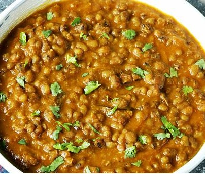

Green Moong Dal Recipe

Description
Green Moong Dal curry is a delicious Indian dish where whole mung beans (Sabut Moong) are cooked with onions, tomatoes, whole & ground spices. It is one of those dishes that is actually cooked in many regions of India.
North Indians call it as Sabut Moong Dal, the Tamil Nadu version is known as Pachai Payaru curry, the Kerala dish is known as Cherupayar Curry & the Andhra version is well-known as Pesalu kura. Surprisingly all these taste different & so delicious!
Ingredients
- ½ cup green gram (dried whole green moong, mung beans)
- ½ cup onions fine chopped (1 medium)
- ¾ cup tomatoes deseeded & chopped or pureed (1 large)
- 1 green chili chopped (optional)
- ¾ teaspoon ginger minced or paste (¾ inch)
- 2 to 3 garlic cloves minced (or ¾ teaspoon paste)
- 1 sprig curry leaves or bay leaf
- 1½ to 2 tablespoons oil or ghee
- ½ teaspoon cumin seeds (jeera)
- ¼ teaspoon mustard seeds (optional)
- ½ to ¾ teaspoon Kashmiri red chili powder (adjust to taste)
- ½ teaspoon garam masala
- ¾ teaspoon coriander powder
- ¼ teaspoon turmeric
- ¾ teaspoon salt (adjust to taste)
- 1½ cups water (3 cups for pot) (1½ cups for Instant pot)
- 2 tablespoon coriander leaves to garnish
STEPS
Preparation
- Rinse and soak green gram for 3 to 4 hours. Avoid over soaking as the skin begins to separate on its own while cooking. If making in Instant pot you can skip soaking.
- Once soaked, discard the water and rinse them well.
How to Make Green Moong Dal Curry
- Heat a pan or pot or pressure cooker with oil. Add mustard seeds (optional) & cumin seeds.
- When they begins to splutter, fry curry leaves & green chilies for 1 minute.
- Add onions & saute until golden. Add the ginger garlic & fry for a minute.
- Next add tomatoes & saute until they break down and turn mushy
- Saute red chili powder, garam masala & coriander powder. Mix and saute for about 1 to 2 minutes.
- Then drain water from the green gram and add it to the pot. Pour water.
- If cooking in a pot: Cook till the green gram is tender & soft. If needed add more hot water. The curry should thicken by now.
- If using a pressure cooker, cook on a medium heat for 3 whistles. When the pressure releases, open the lid.
- Next if the curry is runny, just cook further for a while until it thickens.
- Pour a teaspoon of ghee for serving. Squeeze in some lemon juice. Garnish with coriander leaves. Serve with rice or chapati.
Instant Pot Green Gram Curry
- Rinse the green moong dal well and keep immersed in fresh water until we need it later. Press saute button on your Instant pot and wait for the display to show “HOT”.
- Pour oil or ghee. Then add cumin seeds and curry leaves. When the seeds splutter, add onions and green chilli.
- Saute until the onions turn light golden. Stir in the ginger garlic & saute for 30 to 60 seconds.
- Add tomatoes and sprinkle salt. Saute until the tomatoes turn soft and mushy.
- Add chilli powder, garam masala, coriander powder & turmeric. Saute for 30 seconds & press cancel button.
- Then pour water and scrape the bottom of the steel insert to deglaze any bits of food stuck at the bottom.
- At this stage if you desire you can also blend the onion tomato masala using a hand blender.
- Drain water from the green gram and add them.
- Optional for cooking rice – Place a trivet and then the rice bowl. Cover the rice bowl.
- Secure the IP with the lid and position the steam release handle to sealing.
- Press pressure cook button and set the timer to 8 mins for firmer yet fully cooked lentils. For softer lentils set to 10 mins. If using dried mung beans (unsoaked) then cook them for 15 mins.
- Let the pressure release naturally for 10 mins, then release the rest manually.
- Garnish green gram dal with coriander leaves. You can also stir in some coconut milk or lemon juice if you desire.